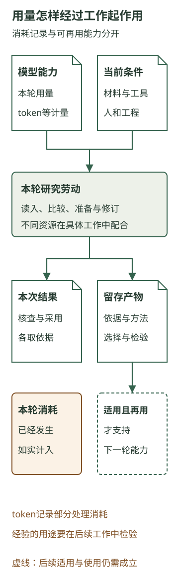

企业购买和配置的是什么智能资源
本章内容
咨询公司已经把一项研究接了起来：研究助手按目的取材、比较和准备底稿，研究员取得客户事实，顾问处理重要取舍，应用保留采用版本并完成交付。运行中的反馈还会要求团队修订方法和实现。
现在看投入。模型账单可以告诉公司消耗了多少用量，却还不能回答：为什么有的投入让顾问更容易作判断，有的投入只多生成了一份需要重看的报告？要理解这种差别，先要知道企业买来的智能，怎样与材料、工具和人的劳动共同工作。
以下继续使用前章的咨询研究情境；新增的比较用于条件推演。
一、买来的智能，参与的是哪一段劳动
在那项设备服务研究中，助手面对的并非一个已经写好全部步骤的表格。它需要围绕客户要选的观察范围，读产品说明，对照标准配置和扩展配置，发现加装计划缺少完成依据，再准备有理由的建议。材料中出现新的冲突，它还可能回到原文继续调查。
这使AI能够作为一种智能伙伴参与工作。研究员交给它一个目的和可用材料，它可以组织普通阅读、提出缺口、作比较，并根据取得的结果继续处理。研究员不必预先列完每一个搜索词，也不必为每一段中间文字重新安排任务。模型的作用因此超出了把固定字段填进模板。
但这项能力需要有具体的工作条件。模型可以从两份说明中辨认适用条件的差别；它要知道本次研究涉及哪些设备，仍须读到客户材料。它可以起草取材问题；完成记录能否取得，要由客户实际提供。它可以解释几种观察范围的理由；改变服务承诺，仍需顾问与负责人作决定。
因此，公司购买模型服务，得到的是在一定条件下使用模型能力的机会。能否把这种能力用于研究，还取决于本轮交给它什么、它能取得什么，以及产物怎样进入后续工作。能力供给相近的两家公司，可以因这些安排不同而得到很不一样的帮助。
二、token计量了什么
模型处理文字时，会把输入拆成便于计算的单元，称为token。一个token不固定等于一个汉字或一个词；具体怎样切分，取决于模型的编码方式。输入材料、生成内容，以及某些服务中的内部推理，会按相应规则形成用量。图像、声音等输入的计量，还要看具体服务。
把它放回这项研究，计量对象就更容易理解了。任务说明和产品原文进入一次模型处理，会形成相应输入；底稿生成会形成输出；之后读到客户补充材料、继续比较和修订，可能发生新的处理。一项业务任务可以包含多次模型请求，调用次数和token量也就不是同一个数。
token帮助企业观察部分智能资源消耗，却没有给这些消耗评价好坏。读一遍当前需要的完成确认，会消耗用量；反复读一份已经失效的旧说明，同样会消耗用量。两次研究即使使用相同数量的token，也可能分别形成可讨论的分析和一份离题报告。
采购时需要按具体服务核对计量、额度与费用。日常经营还要让用量与任务对应起来：这些处理服务于哪项委托，是在取得必要信息、处理重要关系，还是重复了已经完成的工作？只有月度总量，很难回答下一笔投入应该加在哪里。
三、有资料，与本次用上资料，差在哪一步
模型从预先训练中获得一般能力，本次任务、材料和前面的工作过程，则构成这轮处理可以利用的上下文。将一份客户记录放进文件夹，并没有因此改变模型参数，也没有保证下一轮分析已经取得它。
假设某份所需的完成确认已经补回，和加装计划一同保存在资料库里。应用本次只取到了计划，助手就只能根据计划研究；完成确认即使就在旁边，尚未读入仍是缺失输入。若工具只返回了确认记录的前半段，关键设备范围又在后半段，研究也还没有取得所需依据。能找到文件的位置，是取得内容的条件之一。
这就是可用上下文值得经营的原因。企业要让当前目的、有关事实、适用方法和必要的中间结果能够一起进入分析。能够处理更长材料的模型，有机会比较更多相互关联的依据；但多装入一些无关历史，也可能增加处理负担，让当前版本和旧版本更难分清。
一个合理安排是先提供本轮任务、当前采用稿和材料入口，再按问题读取原文。助手发现适用对象冲突，就取得有关设备与说明的段落；需要回看判断理由，再读底稿。较长的过程可以保存在外部，下一步按需继续取得。这样既保留追溯条件，也减少每轮从头重读全部历史的必要。
这里不能只追求输入越短越好。假如删掉了“计划加装、尚未完成”这层条件，留下的短摘要反而可能支持错误判断。选择材料的目标，是让重要关系仍然可见。发现内容被截断或取材失败时，也应知道缺了哪一段，再决定补取、收窄判断或暂停，而非让一份完整样式的输出掩盖输入缺口。
四、为什么更多智能投入有时更划算
沿同一项研究比较两种安排。先假定当前产品原文、设备对应依据和客户目的都已取得，难点在于多份材料的条件相互牵连。较简单的处理只分别概括每份文件，顾问随后还要重新读原文，把哪些对象可以沿用、哪些需要重查逐项组织起来。
另一种安排可以选用更擅长复杂比较的模型，并让助手围绕适用范围多作一轮处理：将每个建议对应到材料，检查计划与完成事实是否混用，保留仍待确认的关系，再准备几种选择及其理由。如果所选模型和任务组织能够做好这些工作，顾问拿到的就更接近一份可判断的底稿。他仍要核对关键依据，却可能少做一段重复恢复背景和组织关系的劳动。
后一种安排可能使用更多模型处理，仍值得比较。因为企业要购买的帮助，是在同样研究要求下，把必要工作更好地完成。是否划算，要看新增模型投入换来了什么，以及专业劳动有没有实际改变，不能只看哪次请求便宜。
再改变一个条件：应用一直把旧版全文交给助手，新的完成记录却没有进入本轮。让模型反复分析旧文，增加的处理就很难补上真正缺的事实。此时值得改变的是取材与版本对应；若完成事实根本尚未发生，则需要客户取得事实。两种情况都不能靠购买更多用量直接解决。
也有不需要复杂模型处理的工作。日期、数量和明确规则的计算，可以交给程序，给人留下可核对的结果。模型可以帮助解释规则与整理输入；计算关系确定以后，没有必要让它反复凭文字估算。面对相互冲突的客户目的、适用条件和服务选择，模型分析与专业讨论又可能更有帮助。资源配置因任务所需的劳动而异。
左右滑动查看完整表格
| 研究中的工作 | 主要需要哪些条件 | 增加模型用量可能改变什么 |
|---|---|---|
| 阅读当前委托、比较产品与客户条件 | 合适的模型能力、本次实际读入的材料 | 可能加深比较、准备更充分的判断理由 |
| 取得设备完成记录 | 客户掌握事实的人、联系与提供记录的安排 | 可以把取材问题写清，不能生成完成事实 |
| 按明确规则汇总时间与数量 | 正确输入、程序计算与结果核对 | 通常先改善计算安排，无须靠反复生成求稳定 |
| 决定是否扩大观察与承诺 | 专业依据、顾问和负责人的时间 | 可以准备选项，决定仍要结合实际责任与条件 |
| 保持资料、工具与交付可用 | 工程实现、版本维护和状态核查 | 可以协助定位与修订，仍有必须完成的工程劳动 |
五、生成等待、专业时间和客户等待要分开
模型延迟，是请求发出后到取得结果所需的时间。它会影响研究员能否连续工作，也可能决定临近讨论时还有没有机会修订。但一项研究从开始到被客户使用，还会等待材料、专业核查、交付和客户讨论。
假如顾问固定在次日看稿，助手提前生成并不自动使客户提前一天收到判断。假如客户只能在下周取得设备记录，当前这轮生成再快，也只能先推进已有依据支持的部分。模型速度仍有价值，只是价值受它在整项工作中所处的位置影响。
人的劳动时间又是另一种量。研究员可以在模型处理时联系客户，因此两段时间可能重叠；顾问亲自核查材料的时间，则真实占用了专业容量。工程人员修好读取对应，可能减少以后取错材料的劳动，但这次修订本身也要投入。token、人工分钟、工程时间和等待应分别记录，再沿工作关系解释，不能相加成一个含义不明的“总投入”。
把这些区别保留下来，企业才有机会做出具体选择：需要更强的比较能力，还是更可靠的材料取得？需要缩短模型响应，还是调整顾问参与的时点？新增一份初稿，后面是否还有人接得住？这些问题比统一要求少用token，更接近资源经营。
六、消耗的资源，怎样留下下一轮的能力
智能资源具有战略意义，因为它参与企业理解问题、准备判断和开展行动的能力供给。能否持续取得并有效使用这些资源，会影响企业能够组织什么生产。但已经消耗的用量，与企业可以继续使用的经验，是两类不同对象。
一次研究结束，模型处理已经发生。能够留到下一轮的，可以是核实过的客户认识、带依据的采用稿、一种更好的比较方法，或者让新材料正确进入研究的工程安排。它们仍需保持适用、能够取得，并被后续工作使用。保存下来的原文和底稿，为这种接续提供条件。
比如，“这组设备已经完成加装”是一项有范围和时点的客户事实；“把计划与完成依据分开，再判断影响对象”则是一种可能用于其他委托的方法。前者需要在变化时更新，后者需要在新任务中检验是否仍有帮助。企业积累的是这些可以再用的认识与工作能力，token记录则帮助看清为了形成它们消耗了什么。

这也使“智能伙伴”的经营含义更完整：企业既要让智能参与值得做的工作，又要组织材料、专业和工程，使这次处理能够转成客户可用结果，并为下一次留下合适的起点。要判断某种安排是否值得采用，还需要把同一批委托从准备一直算到核查、跟进和客户使用。
来源与延伸
token、预先训练与当前上下文、模型生成与工具执行的区别，参考固定存档的《模型如何生成回答》。保存、加载和更新分别安排，可参看DeepAgents第8章；这里采用其机制区别，没有把该框架当作本课研究助手的实际实现。
按目标选择材料、让截断可见及限制无效重试，参考Harness第26章的工程讨论。采用范围限于这些方法，不采用内部阈值、字符换算和用量统计作为通用数值。本章的投入比较是咨询情境中的条件推演。
内部推理形成用量的具体例子，见OpenAI推理模型官方说明的“How reasoning works”段：推理token会占用上下文，并按输出token计费。该来源于2026年10月28日核对，用于支持本章关于内部处理也可能形成资源消耗的说明。